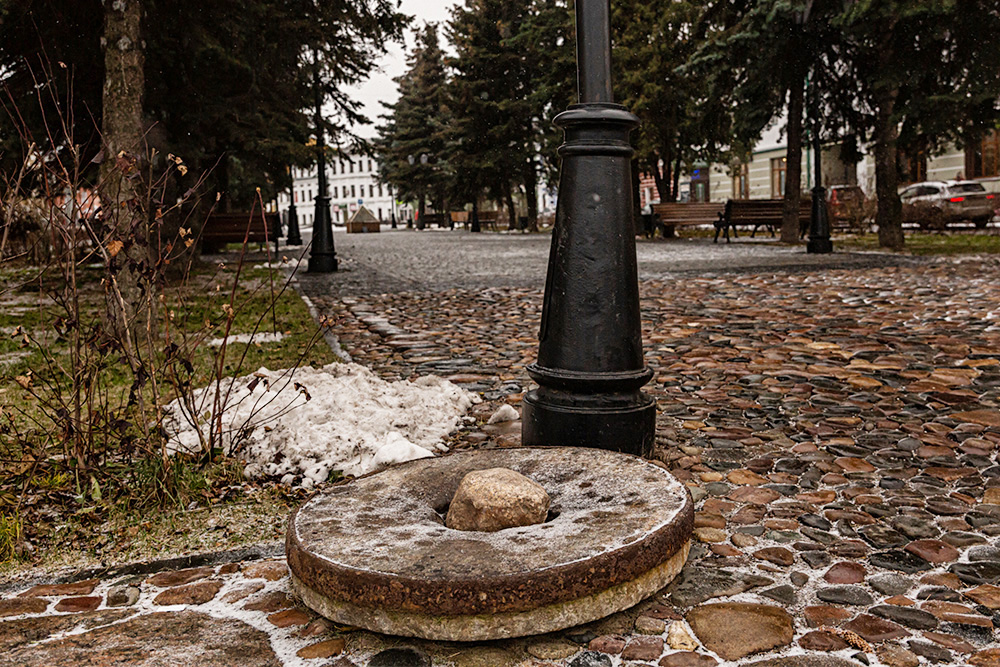

Описание: Музей, посвящённый истории и культуре Рыбинска, где представлены уникальные археологические находки, документы и экспозиции, отражающие жизнь региона на протяжении веков.
Интересный факт: В коллекции музея хранится одна из самых полных архивных коллекций фотографий города, датируемых началом XX века.
Расположение: Центральная площадь
Предыстория: Идея создания музея зародилась в начале XX века, когда группа неравнодушных историков и общественных деятелей начала собирать артефакты и документы, чтобы сохранить память о богатом культурном наследии региона. Первые экспозиции представляли собой скромные выставки в частных домах, но с ростом интереса местного населения и поддержкой городской администрации было принято решение о создании постоянного учреждения. В 1930-х годах музей открыл свои двери для публики, пройдя через ряд реконструкций и обновлений экспозиций. За годы работы музей не только стал центром научных исследований, но и площадкой для культурного диалога между поколениями, сохраняя уникальные свидетельства многовековой истории Рыбинска.
Описание: Живописная набережная вдоль реки, где можно наслаждаться прогулками, свежим воздухом и живописными пейзажами, окунуться в атмосферу спокойствия и природной красоты.
Интересный факт: На набережной регулярно проходят летние фестивали, где можно увидеть народные гуляния, концерты и ярмарки, привлекающие жителей и гостей города.
Расположение: У реки
Предыстория: Изначально территория современной набережной была населена рыбаками и торговцами, которые использовали реку для транспортировки товаров и обмена продукцией. С течением времени и с ростом города это место превратилось в центр общественной жизни. В советский период была проведена масштабная реконструкция, направленная на благоустройство городской инфраструктуры, что сделало набережную местом для проведения массовых культурных и спортивных мероприятий. Сегодня набережная – это не только исторический памятник, но и динамично развивающееся пространство, где традиции переплетаются с современными формами досуга.
Описание: Историческое здание XIX века, яркий образец классической промышленной архитектуры. Каланча высотой 32 метра служила для наблюдения за пожарами и оповещения горожан. Сегодня в ней расположен Музей пожарного дела, где можно увидеть старинное оборудование, форму огнеборцев и архивные фотографии.
Интересный факт: До 1950-х годов на каланче дежурил дозорный, который бил в колокол при обнаружении дыма, а ночью зажигал сигнальные фонари.
Расположение: Центр города, ул. Стоялая, 4.
Предыстория: Построена в 1843 году на средства купцов, обеспокоенных частыми пожарами в деревянном Рыбинске. Архитектор — Пётр Уткин, вдохновлявшийся обликом столичных каланч. В советское время здание использовалось как коммунальное жильё, но в 2000-х годах было отреставрировано. Сегодня это символ города и популярное место для фотосессий, а смотровая площадка наверху открывает панорамный вид на Волгу и исторические кварталы.
Описание: Рыбинский собор – главный храм города, являющийся духовным центром и архитектурной доминантой, отражающей богатые традиции православного зодчества. Здание отличается изысканным купольным ансамблем, декоративными элементами и витиеватыми резными украшениями, демонстрируя мастерство зодчих и тесную связь с историей региона.
Интересный факт: По одной из легенд, купола собора были возведены по личному заказу святого покровителя города, что придавало сооружению особую символическую значимость и делало его одним из самых узнаваемых памятников Рыбинска.
Расположение: Центр города
Предыстория: Идея возведения Рыбинского собора зародилась в период глубоких социальных и культурных перемен конца XVIII века, когда жители города стремились создать не только место для богослужений, но и символ единства и надежды. Строительство храма было поддержано как местной знатью, так и духовенством, что позволило собрать необходимые средства и привлечь лучших мастеров того времени. Фундамент собора был заложен в 1790 году, и уже в течение последующих десятилетий храм обрел свой окончательный вид, став воплощением идеалов традиционного русского зодчества. Архитекторы, вдохновляясь классическими формами и национальными мотивами, создали проект, который объединял в себе строгие линии и плавные изгибы, подчеркивая гармонию между архитектурой и природой. Особое внимание уделялось оформлению интерьера: иконостасы, расписные купола и витражи свидетельствуют о высоком художественном уровне исполнения и глубоких духовных традициях. На протяжении веков Рыбинский собор становился местом важнейших общественных и церковных событий. Он пережил несколько этапов реставраций – от восстановления после крупных пожаров до реконструкций, вызванных изменениями в градостроительной среде и политическими потрясениями. Каждая реставрация не только сохраняла архитектурное наследие, но и вносила новые элементы, отражающие дух времени. Сегодня собор не только место регулярных богослужений, но и культурный ориентир, привлекающий туристов, исследователей и почитателей древнерусского искусства. Его величественный облик и богатая история продолжают вдохновлять жителей города, напоминая о непрерывности традиций и значимости духовного наследия Рыбинска.
Описание: Красная площадь – исторический и культурный центр Рыбинска, ставший местом общественных собраний, праздников и городских мероприятий. Эта площадь объединяет архитектурные памятники, современные инсталляции и элементы городской истории, создавая уникальное пространство для встреч жителей и гостей города.
Интересный факт: Несмотря на название, площадь не имеет прямого отношения к революционным событиям – оно возникло из-за древних традиций украшения центральной площади в красный цвет, символизирующий тепло, радость и объединение людей.
Расположение: Центр города
Предыстория: История Красной площади уходит корнями в глубь столетий, когда на месте современного центра города проходили ярмарки и общественные собрания. Первоначально эта территория использовалась как рыночная площадь, где купцы, ремесленники и фермеры собирались для обмена товарами и новостями. С течением времени и ростом города площадь стала принимать всё более важную роль в общественной жизни, становясь не только торговым узлом, но и местом проведения государственных и религиозных церемоний. В XIX веке, в период модернизации городской инфраструктуры, площадь была преобразована с учётом новых архитектурных тенденций. Было проведено благоустройство территории, установлены памятники и декоративные элементы, отражающие дух времени. Именно в этот период площадь получила своё нынешнее название – «Красная», которое символизировало не только яркость её оформления, но и тепло, объединяющее людей разных сословий. Советский период принес новые изменения: на площади были организованы массовые праздники, митинги и культурные мероприятия, что сделало её настоящей витриной общественной жизни Рыбинска. Несмотря на все трансформации, Красная площадь сохранила свою роль центра города. Сегодня здесь проводятся фестивали, выставки и концертные программы, что позволяет жителям и туристам окунуться в атмосферу исторического наследия и современного творчества. Красная площадь в Рыбинске – это место, где прошлое встречается с настоящим, а традиции переплетаются с инновациями, создавая уникальное пространство для культурного и общественного развития города.

Описание: Улица Стоялая – одна из старейших и атмосферных улиц Рыбинска, где гармонично сочетаются историческая архитектура, уютные кафе и лавочки, а также современный городской колорит. Это место, где можно ощутить пульс городской жизни и проследить эволюцию городской культуры.
Интересный факт: По преданию, название улицы «Стоялая» происходит от древнего выражения, означающего «стойкость», что отражает характер жителей и историю места, пережившего немало испытаний временем.
Расположение: Центр города
Предыстория: Улица Стоялая возникла в период формирования Рыбинска как важного торгового и культурного центра региона. Первоначально это была узкая мощёная тропинка, по которой проходили торговцы и ремесленники, обменивались новостями и товарами. С течением времени она превратилась в одну из главных улиц города, олицетворяя дух местного сообщества и его стойкость перед лицом трудностей. В XIX веке на улице стали появляться первые кирпичные здания, а архитектурный облик района постепенно преображался под влиянием новых веяний. Здесь располагались лавки купцов, небольшие мастерские и домики местных жителей, чья жизнь была неразрывно связана с торговлей и ремёслами. Каждое здание, каждая витрина хранили в себе частичку городской истории, а улица в целом стала своеобразным музеем под открытым небом. Советский период внес свои коррективы: улица Стоялая получила новое назначение – здесь размещались административные учреждения, культурные центры и общественные организации. Несмотря на модернизацию инфраструктуры, многие исторические элементы были сохранены, позволяя сохранить уникальную атмосферу и колорит старого Рыбинска. Сегодня на улице можно встретить не только современные магазины и кафе, но и реставрированные фасады домов, являющиеся памятниками архитектурного наследия. Улица Стоялая продолжает оставаться популярным местом как для прогулок горожан, так и для туристов, ищущих аутентичные уголки города. Местные жители с гордостью рассказывают посетителям легенды о стойкости и мужестве своих предков, передавая через архитектуру и атмосферу улицы частичку богатой истории Рыбинска.
Описание: Железнодорожный вокзал – важный транспортный узел Рыбинска, обладающий оригинальной архитектурной формой и историческим значением. Вокзал служит не только отправной точкой для путешественников, но и памятником эпохи железнодорожного строительства, отражающим развитие города и региона.
Интересный факт: Здание вокзала известно своей необычной архитектурой, сочетающей элементы классицизма и модерна, а также считается одним из первых объектов в регионе, построенных специально для обслуживания пассажирских перевозок.
Расположение: Центр города
Предыстория: Идея создания железнодорожного вокзала в Рыбинске зародилась в конце XIX века, когда развитие железнодорожного сообщения стало приоритетным направлением для экономического роста регионов. В то время Рыбинск постепенно превращался в важный транспортный узел, соединявший отдалённые территории с крупными промышленными центрами. Строительство вокзала началось в начале XX века, чему способствовали инвестиции местной администрации и поддержки со стороны государства, стремившегося модернизировать транспортную инфраструктуру страны. Здание вокзала проектировали с учётом передовых архитектурных решений того времени: просторные залы ожидания, удобные платформы и функциональные инженерные системы позволяли обеспечить высокий уровень комфорта для пассажиров. На протяжении десятилетий вокзал становился свидетелем множества исторических событий – от переломных моментов в истории страны до ежедневных встреч и расставаний людей, отправляющихся в разные уголки России. В советский период здание подверглось модернизации, что позволило адаптировать его к новым требованиям транспортной логистики, однако сохранились многие архитектурные детали, свидетельствующие о его прошлом величии. Сегодня железнодорожный вокзал города Рыбинск не только продолжает выполнять важную транспортную функцию, но и является памятником инженерной мысли и архитектурного мастерства, привлекая внимание туристов и любителей истории. Его историческое значение и уникальный облик остаются неотъемлемой частью культурного наследия города, напоминая о времени, когда железная дорога стала символом прогресса и объединения людей разных эпох и судеб.
Описание: Костёл Святейшего Сердца Иисуса – уникальное архитектурное сооружение в Рыбинске, представляющее собой не только религиозный центр католической общины, но и важный культурный памятник, демонстрирующий слияние европейских традиций с местным колоритом. Здание поражает своим изящным фасадом, высокими шпилями и витиеватыми деталями, отражая дух веры и стремление к духовному совершенству. Интересный факт: Несмотря на небольшую численность католической общины в городе, костёл стал местом проведения масштабных культурных и благотворительных мероприятий, объединяя людей разных конфессий в духе взаимопомощи и единства.
Расположение: Центр города
Предыстория: История появления Костёла Святейшего Сердца Иисуса в Рыбинске началась в период межвоенных лет, когда расширение культурного и религиозного диалога способствовало установлению связей между различными вероисповеданиями. Идея создания храма зародилась благодаря усилиям местных католиков, а также поддержке европейских миссионерских организаций, стремившихся привнести в регион новые архитектурные и духовные ценности. Строительство костёла было инициировано в 1930-х годах, когда город активно развивался и открывал новые страницы в своей культурной жизни. Архитекторы, привлечённые идеей создания здания, отражающего лучшие образцы неоготики, разработали проект, где каждая деталь – от высоких шпилей до резных декоративных элементов – имела глубокий символический смысл. Несмотря на сложности, связанные с экономической ситуацией того времени, усилия местных верующих и благотворителей позволили воплотить в жизнь мечту о создании храма, ставшего духовным маяком для католической общины. В послевоенные годы костёл претерпел несколько этапов реставрации и модернизации, что позволило сохранить его исторический облик и уникальные архитектурные особенности. Сегодня здание не только служит местом богослужений, но и является культурным центром, где проходят концерты, выставки и лекции, направленные на укрепление межконфессионального диалога и взаимопонимания. Костёл Святейшего Сердца Иисуса продолжает вдохновлять жителей Рыбинска своим величественным видом и богатой историей, напоминая о важности духовных ценностей и культурного многообразия в современном обществе.